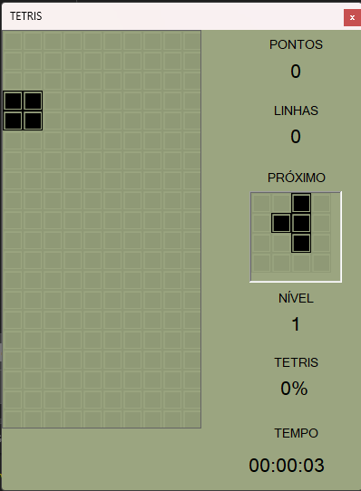
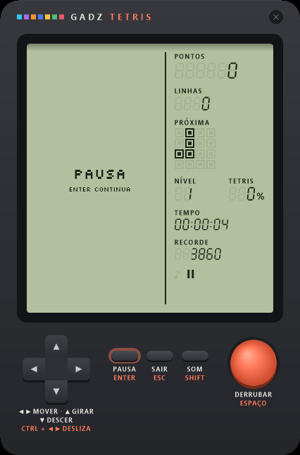
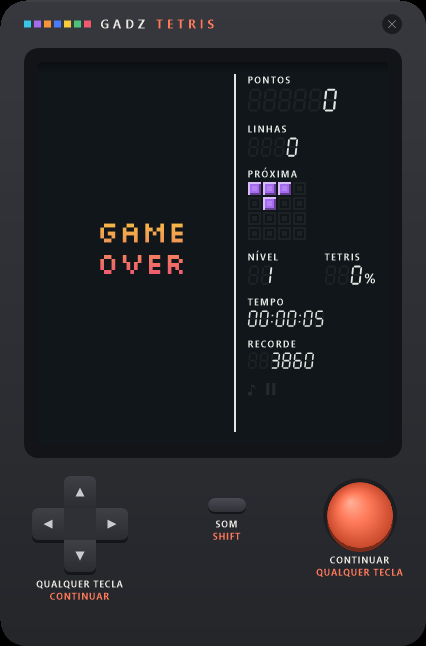
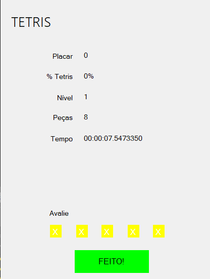
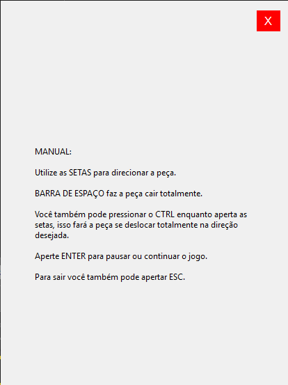
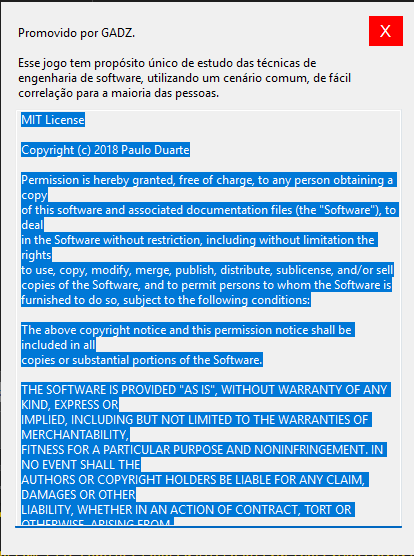

Conceito: um aparelho, várias telas. A carcaça (moldura, LCD e botões) é a mesma em todo o jogo; só o conteúdo do LCD muda. Cada botão mostra a ação e a tecla correspondente, então a ajuda fica sempre à vista. Inspirado em minigames de bolso, com identidade própria: grafite + coral.
Os mockups são interativos e ligados entre si como na jornada: clique em um aparelho e use o teclado. No menu, ← → trocam o estilo (vale para todas as telas), Shift liga o som e Enter leva à partida.






Um Tetris feito para estudar engenharia de software num cenário que todo mundo conhece.